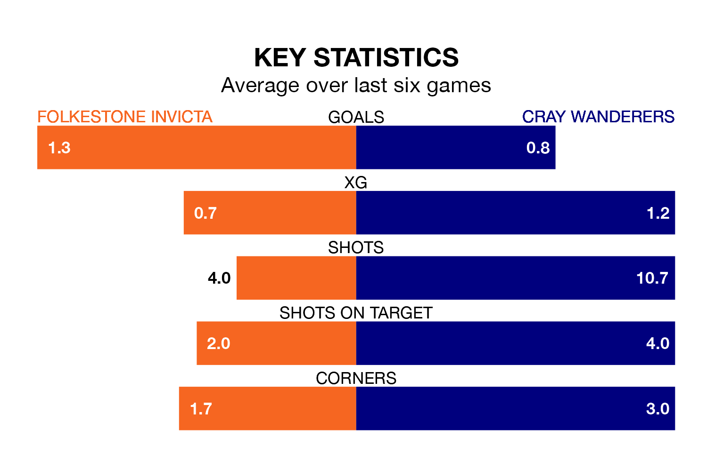

Cray Wanderers travel to Folkestone Invicta on late Tuesday in Isthmian Premier Division.
The visitors come into the game on the back of a win in their last match, having beaten Carshalton Athletic 2-1 away.
Folkestone Invicta also won their last match, 2-1 against Billericay Town.
In the last 10 years, Folkestone Invicta and Cray have played each other on six occasions. They won two each, and they drew twice.
On average, Folkestone Invicta scored 1.5 goals and Cray 1.8 in those matches.
Their last meeting was on February 15, when they played out a 0-0 draw.
Folkestone Invicta are 16th in the table after 28 games, of which they have won eight and drawn seven, earning 31 points.
Cray are one place ahead of the home team in 15th, with eight wins and seven draws putting them on the same number of points.
With 31 goals in 26 games so far this season, Wanderers are scoring at below the league average rate with 1.2 goals per game. But they are conceding fewer than average too, letting in 40 goals at a rate of 1.5 per game.
Folkestone Invicta are also below average scorers, with 1.4 goals per game, compared to a league average of 1.6. They have conceded 1.7 goals per game.
Folkestone Invicta are in mixed form in Isthmian Premier Division, with two wins and two draws from their last six games.
And also with two wins and two draws over that period, the visitors' form is identical – they have both taken eight points from 18.
Updated: 14:59 (UTC), 05/02/24